Etapa 2 do roadmap. Telas reais do app (não mockup), com conexões de exemplo. Testadas com 10 subagentes por rodada, sem nenhum contexto, até eles responderem certo onde está o dado, qual é o original, para onde vai e o que muda ao clicar.
O modelo em 6 regras
Dois lugares: On this Mac (o Racky guarda o que os agentes coletam) e Connections (seus bancos, buckets, warehouses, planilhas, webhooks).
Barra de localização em toda tela: lugar (com PROD/DEV) › schema › objeto, o tipo, e um selo de papel: Original, One-way copy ou Written by agents.
Data path: a trilha Agentes → original → cópias, com 'You are here' e uma frase dizendo para que lado o dado anda e se edição volta.
Produção: faixa âmbar com quem está gravando agora, Pause e o que pausar faz; mudanças pedem confirmação.
Tabs como no DBeaver, com o lugar escrito em cada uma (duas 'books' não se confundem).
Save data to na nova sessão: padrão This Mac; escolher uma conexão mostra exatamente o que acontece.
Rodadas de teste
Rodada
Método
Resultado
O que apareceu
1
nota subjetiva
3,1 / 5
Cópias sem origem clara, produção pouco sinalizada, vocabulário trocado
2
nota subjetiva
3,2 / 5
'every new row' vs 'last copy 5h ago'; qual é a fonte?
3
nota subjetiva
3,2 / 5
Trilha de linhagem ajudou nas tabelas; ainda 'qual é o original'
4
nota subjetiva
3,2 / 5
Acertavam os fatos; nota puxada pelo risco do produto e detalhes
5
questionário 12 perguntas
8 de 10 tudo certo
Achavam que o padrão da sessão nova era produção
6
questionário
9 de 10 tudo certo
Único erro: rigor do corretor
7
questionário (final)
8 de 10 tudo certo
1 erro de rigor, 1 inversão isolada; todas as perguntas com 9 ou 10 acertos
Telas
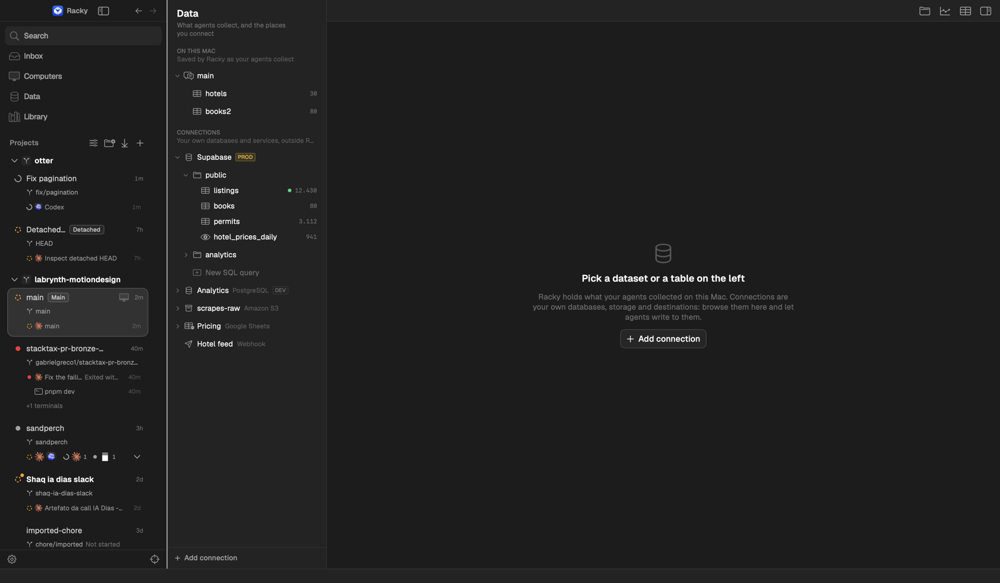
1. Data, nada abertoExplorer com duas seções: On this Mac (o que os agentes coletaram, salvo pelo Racky) e Connections (seus bancos e serviços). PROD em âmbar; ponto verde = alguém gravando agora.
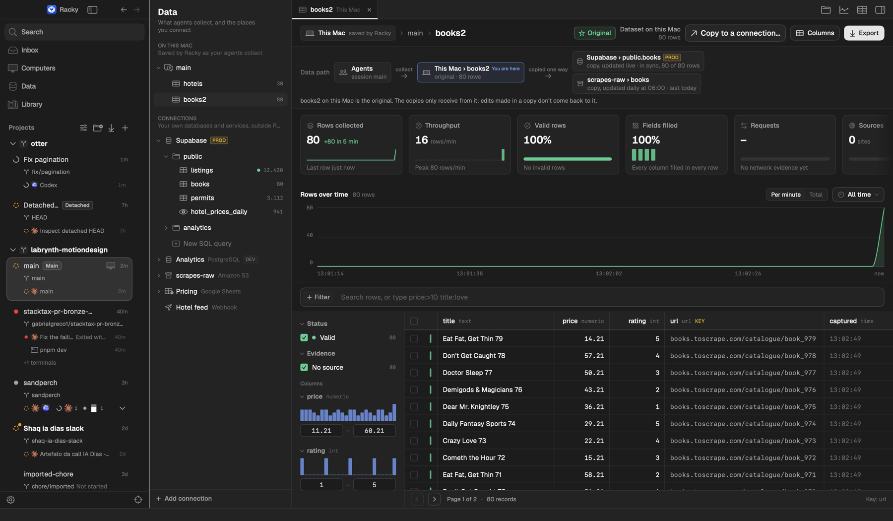
2. Dataset no Mac (o original)Selo Original. A trilha mostra o caminho: Agentes → This Mac › books2 → cópias no Supabase (ao vivo, em dia 80/80) e no S3 (diária). A frase embaixo diz que as cópias só recebem.
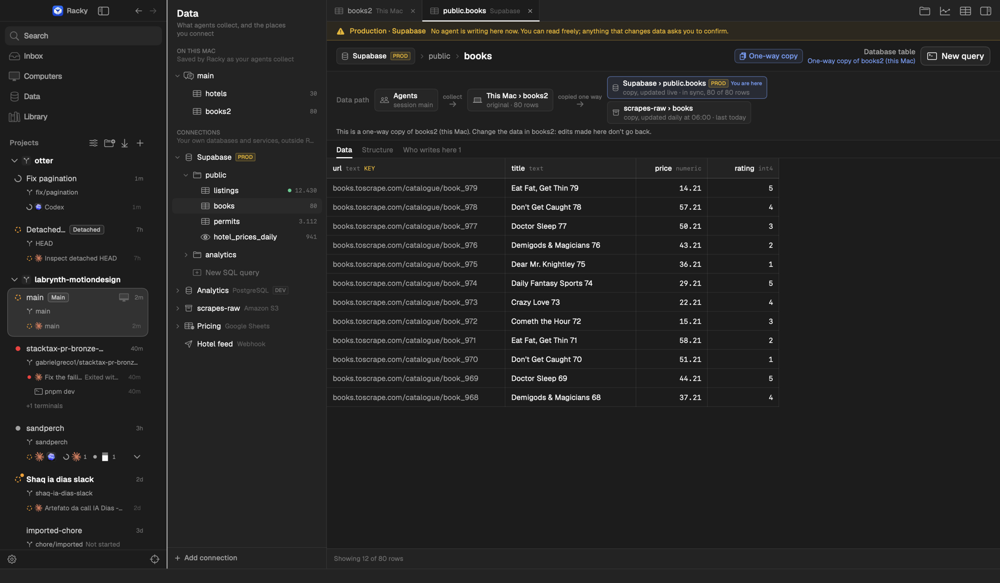
3. Tabela do Supabase que é cópiaFaixa de produção. Selo One-way copy, 'You are here' na trilha, e a frase: mude os dados em books2, edição aqui não volta.
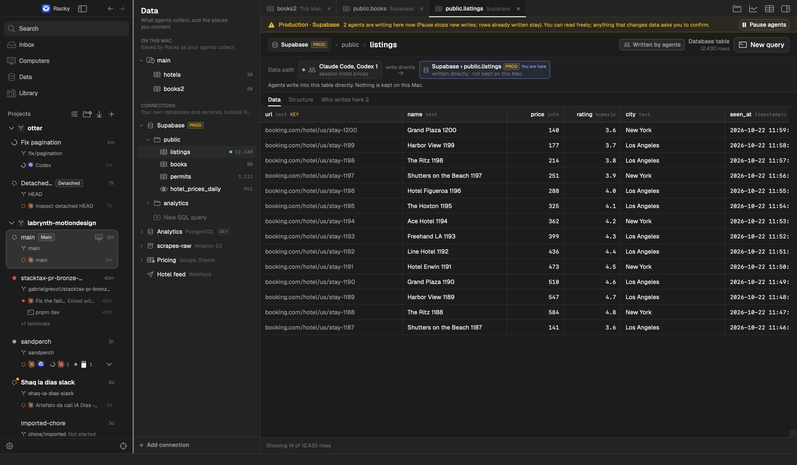
4. Tabela onde os agentes gravam diretoSelo Written by agents, 2 agentes gravando agora, botão Pause agents e o que acontece ao pausar.
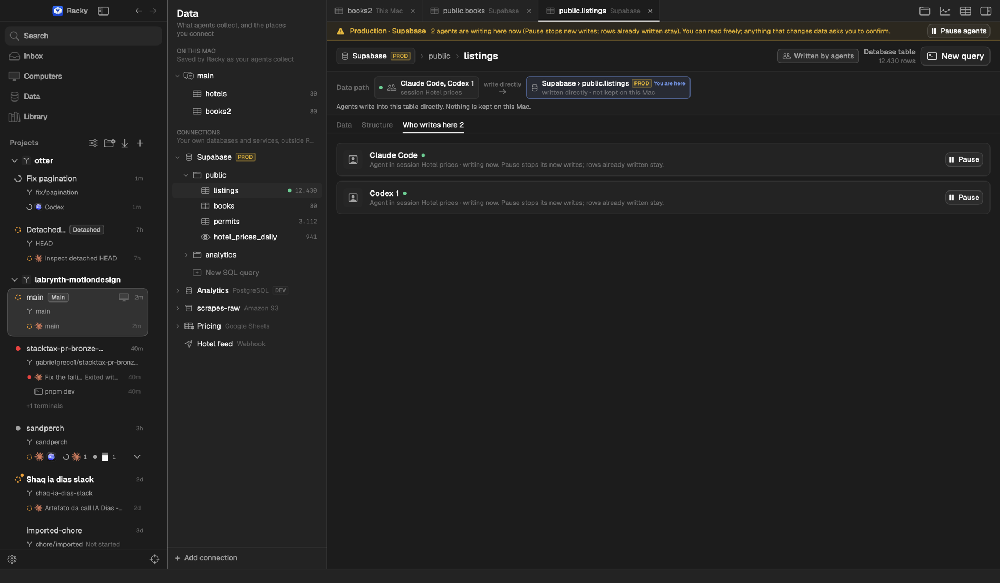
5. Aba 'Who writes here'Cada agente com sessão, estado e Pause.
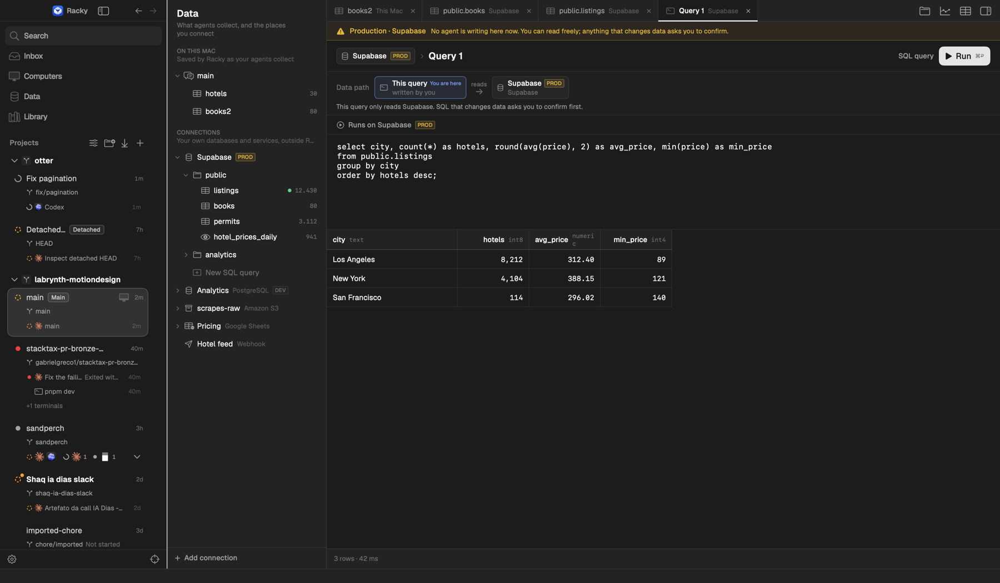
6. Consulta SQLRoda no Supabase (produção); a faixa diz que SQL que muda dados pede confirmação.
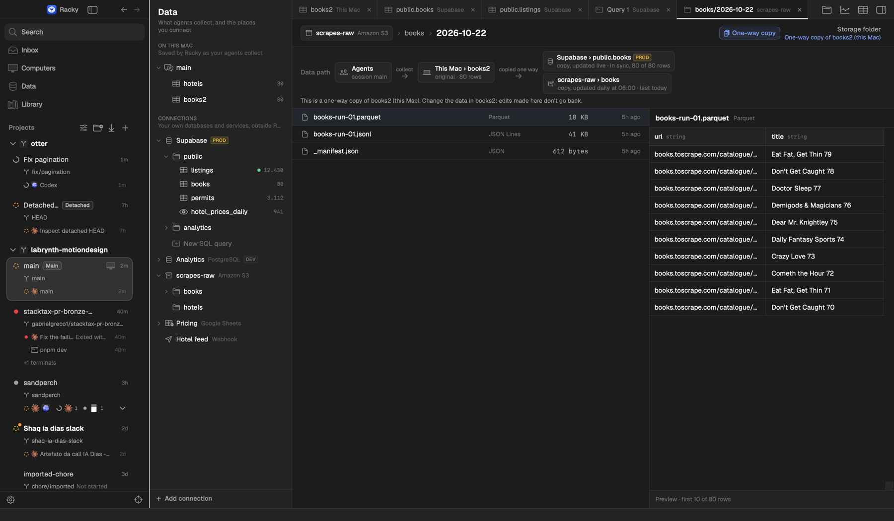
7. Pasta no S3Arquivos com formato e tamanho, prévia do Parquet ao lado; trilha mostra que é cópia diária de books2.
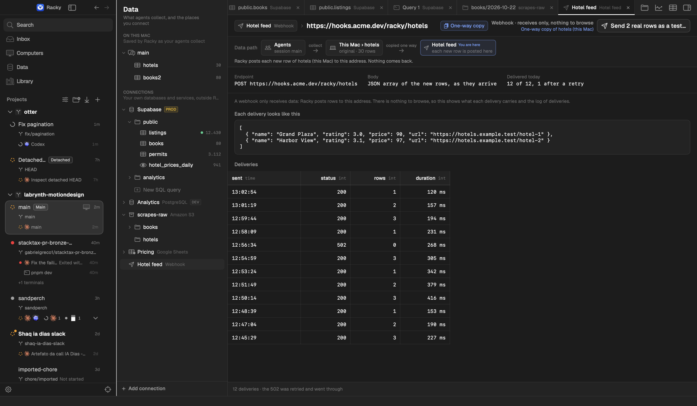
8. Webhook'Receives only, nothing to browse': endereço, exemplo do corpo enviado e o log de entregas.
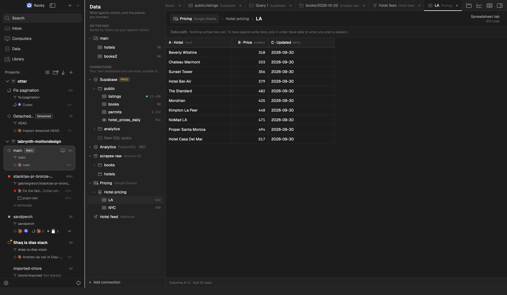
9. Aba de planilhaGoogle Sheets; diz que nada grava ali ainda e como escolher como destino.
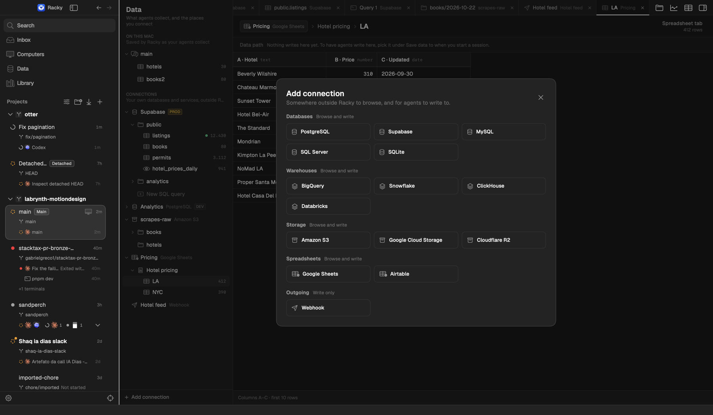
10. Add connectionTipos agrupados (Databases, Warehouses, Storage, Spreadsheets, Outgoing) com 'Browse and write' / 'Write only'.
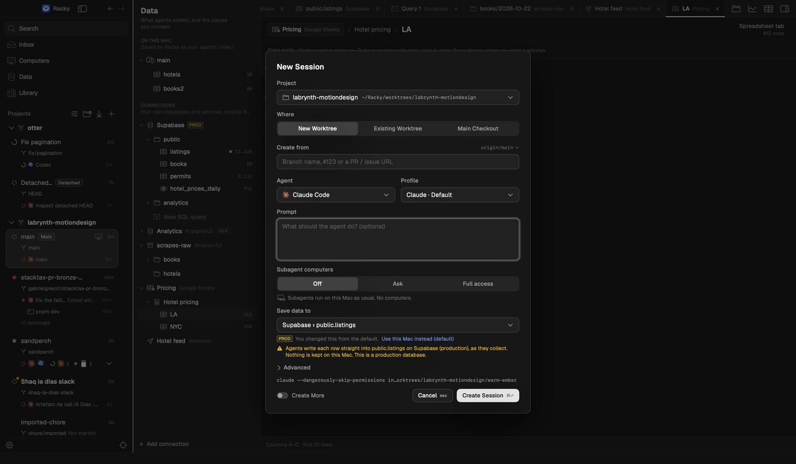
11. Nova sessão: Save data toPadrão é This Mac. Escolhendo uma tabela de produção aparece PROD, 'You changed this from the default' e a frase do que vai acontecer.